ポッコのふしぎずかん · 学習の区切り
3〜6問の区切りを保ち、新しい内容の短い継続・必要な復習・任意の「つぎも やる」で次の区間を選びます。選ばなくても自動で進み、選んだ希望は一区間だけ反映します。
実画面：http://127.0.0.1:5470 · 9300ea0-subjects-880a65a8d2ec配信フラグ：island=true / build-play=false · mystic-island-living-v4 / mystic-island-learning-v2版：9300ea0-subjects-880a65a8d2ec:235da1f6-a3f5-4859-b206-85bff2b8e8f8
見た目：既存の構成を維持教科表示を44px以上の操作へ。世界・問題・全数字キーの見やすさを実画面で確認。
操作・安全：検査PASS選択・取消・再開・保存失敗・入力途中の保持とEnter操作を確認。子どもの自発的理解は未観察。
実装：回帰検査PASS全2,128テスト、実UI・保存・PWA・固定10問を通過。継続率や後日の学習効果は別の観測が必要。
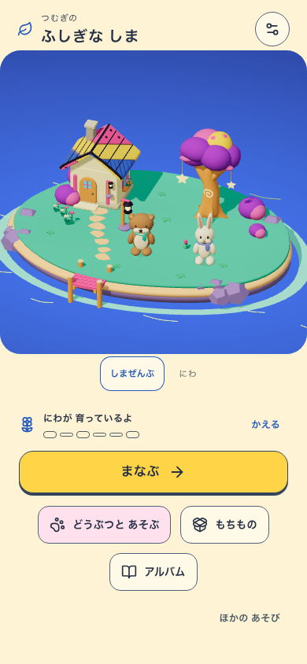
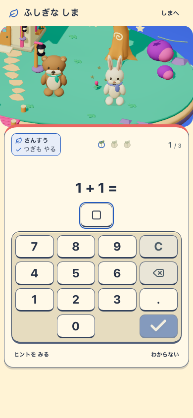
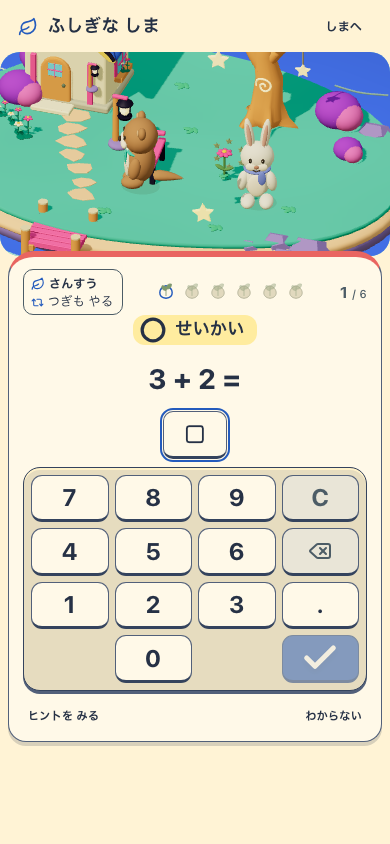
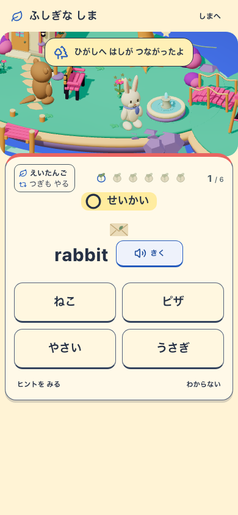
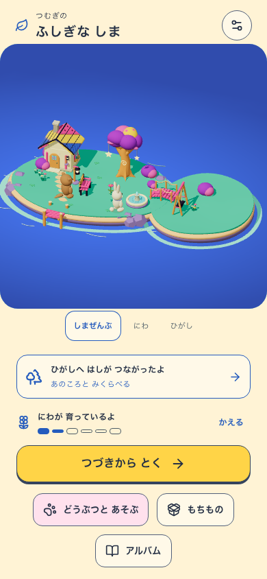
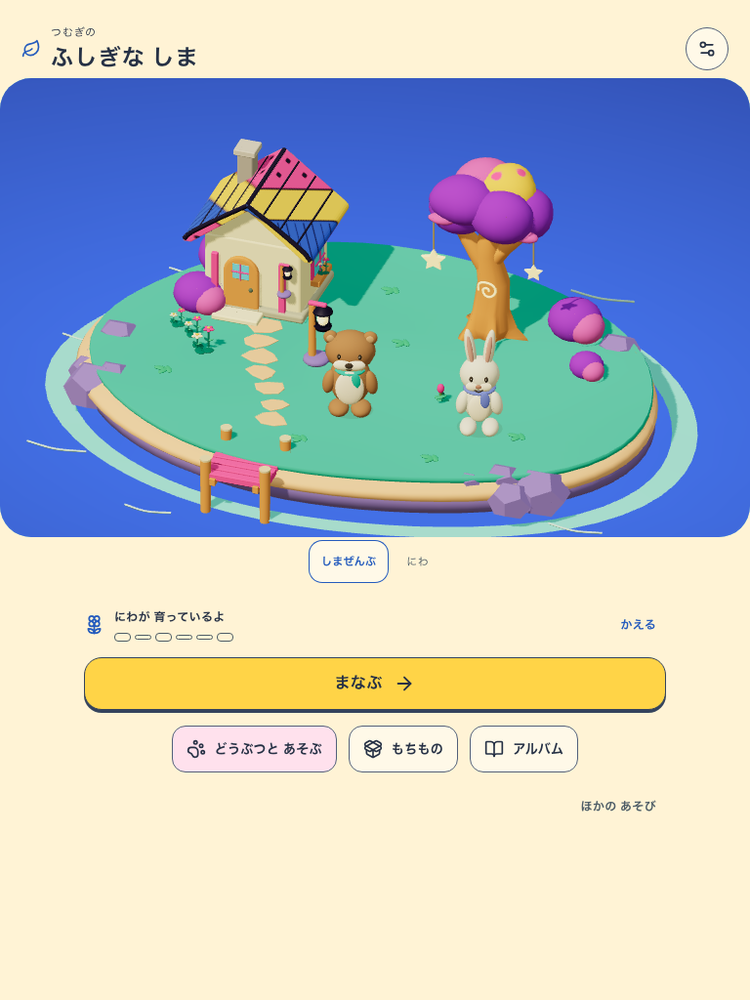
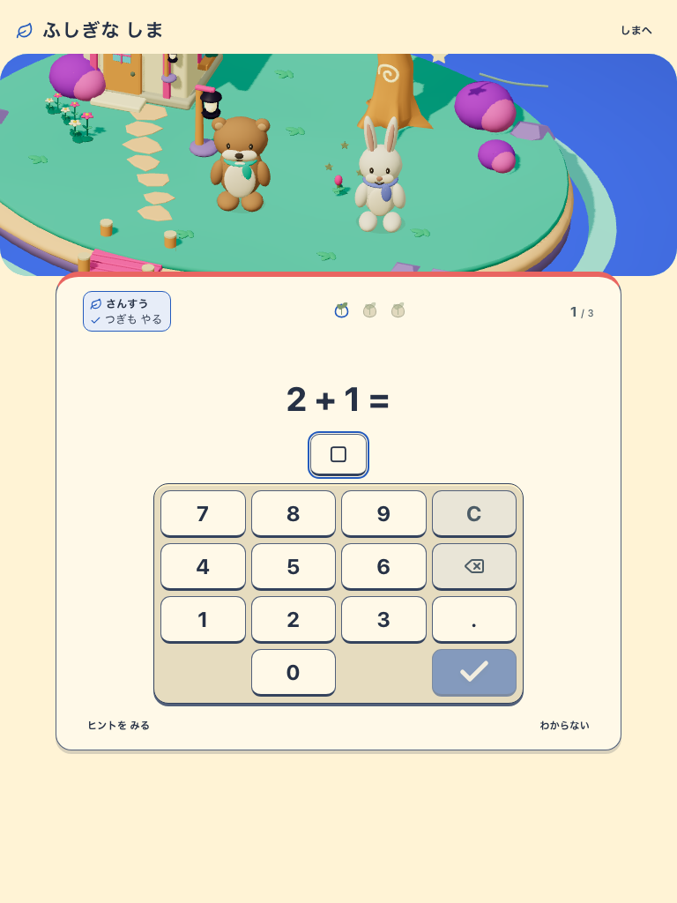
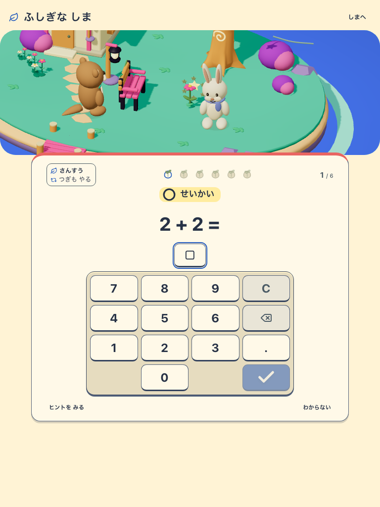
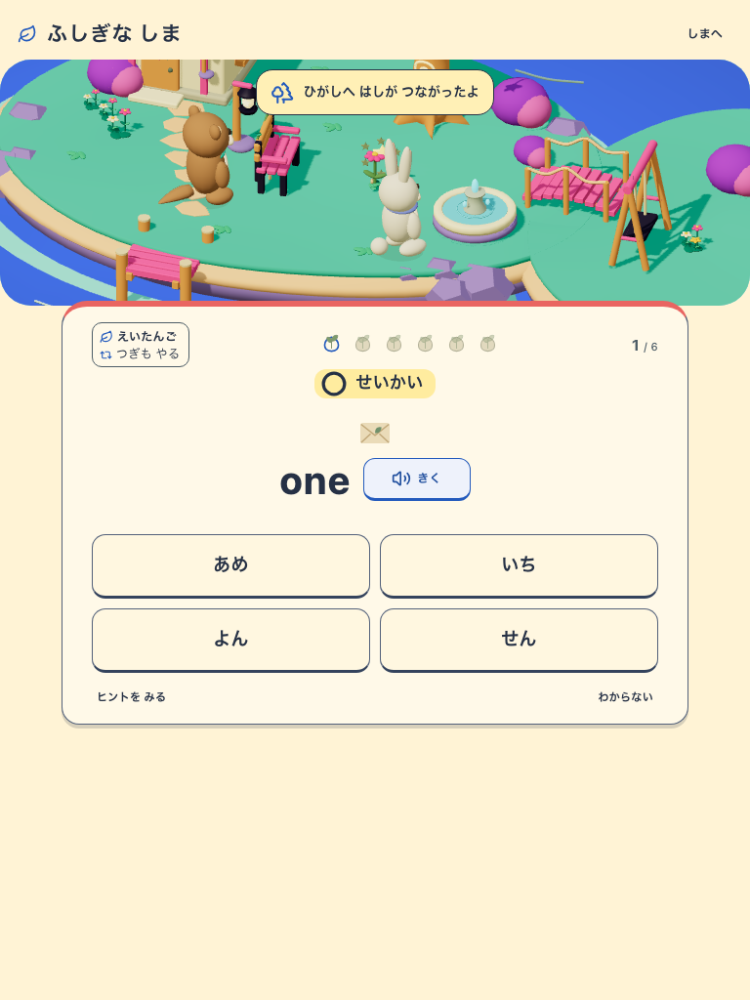
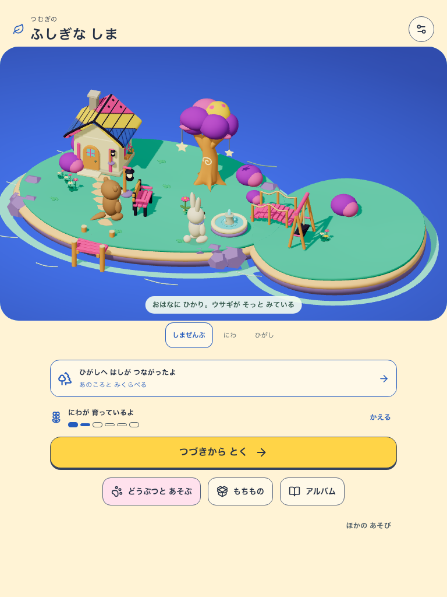
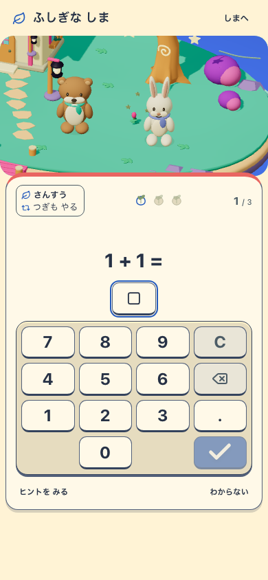
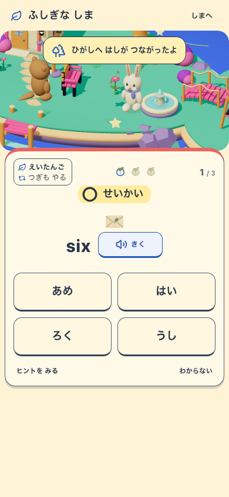
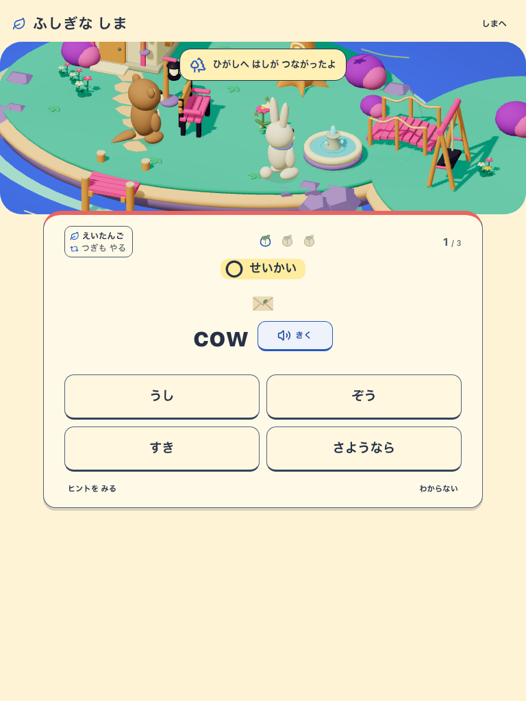
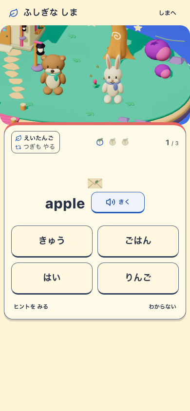
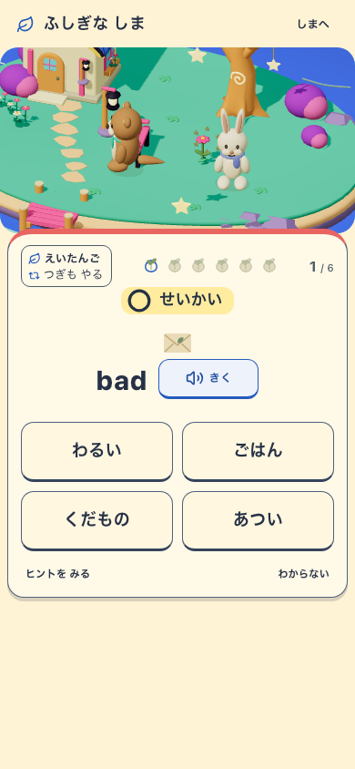
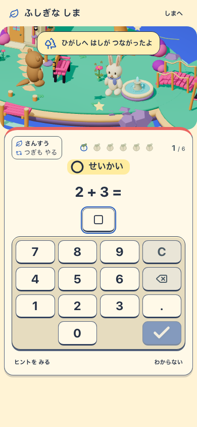
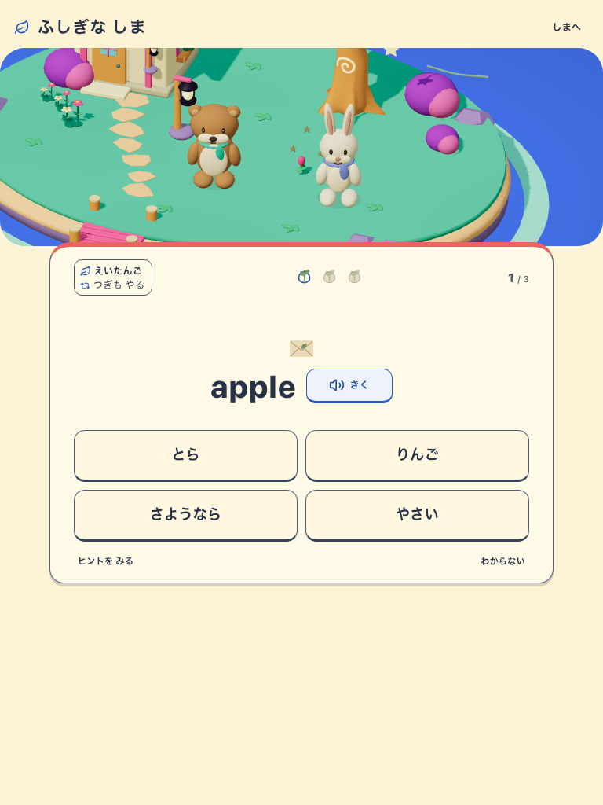
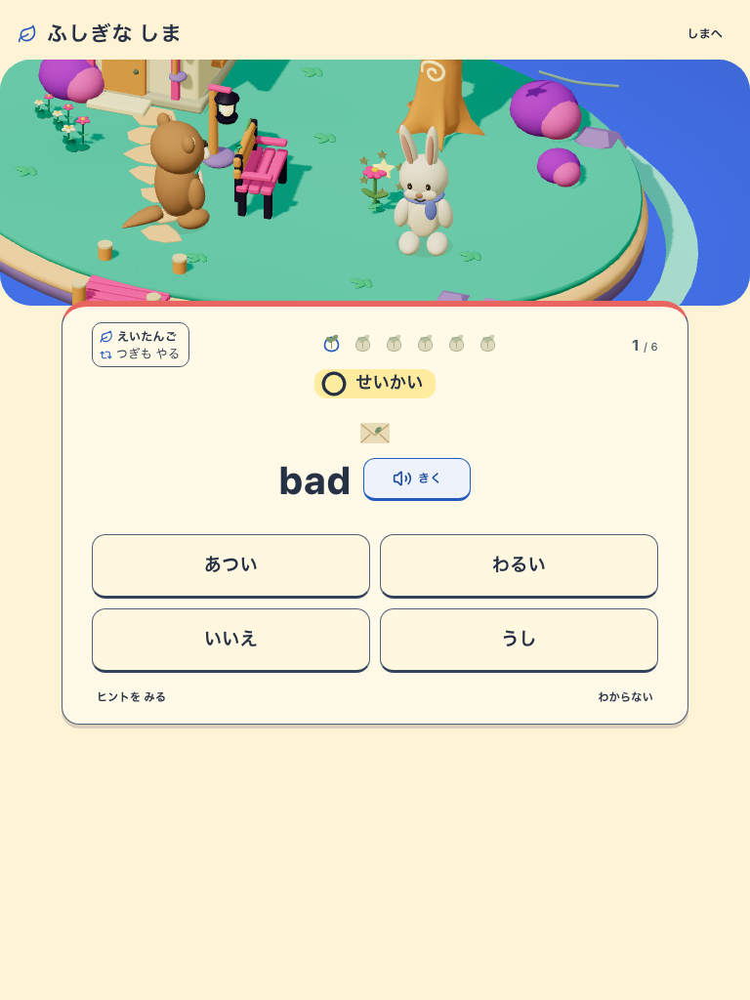
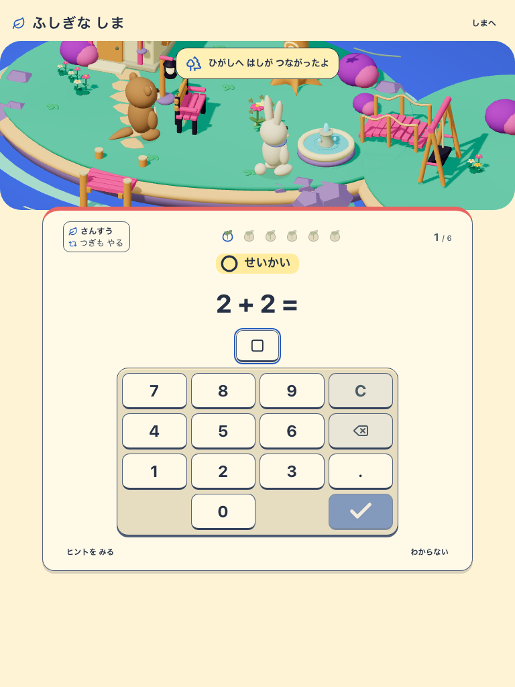
同じv4の世界・操作面の階層と比較。問題・成長段階が異なるため、ピクセル差による判定には使いません。